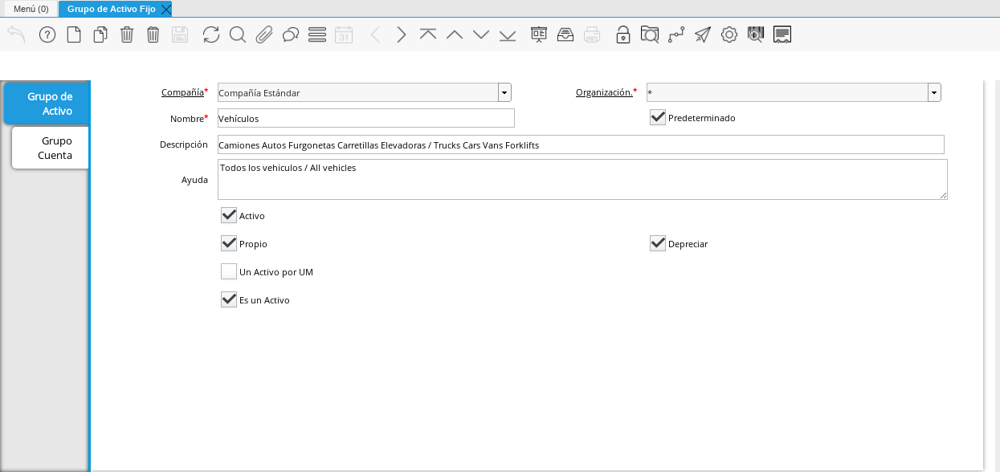
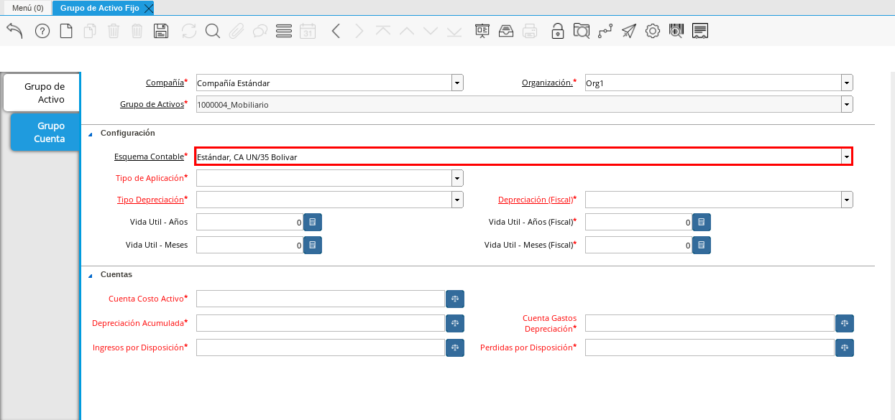

Ventana Grupo de Activos Fijos¶
Ubique y seleccione en el menú de ADempiere, la carpeta “Gestión de Activos”, luego seleccione la ventana “Grupo de Activo Fijo”.
Imagen 1. Menú de ADempiere

Podrá visualizar la ventana “Grupo de Activo”, con el registro de los grupos de activos que la empresa posee en ADempiere.

Imagen 2. Ventana Principal Grupo de Activo
Registro Nuevo de Grupo de Activo¶
Seleccione el icono “Registro Nuevo”, ubicado en la barra de herramientas de ADempiere.
Imagen 3. Icono Registro Nuevo

Seleccione en el campo “Organización”, la organización para la cual esta realizando el registro de grupo de activo fijo.
Imagen 4. Campo Organización

Introduzca en el campo “Nombre”, el nombre correspondiente al grupo de activo fijo que esta registrando. Para ejemplificar el registro es utilizado el grupo de activo fijo “Mobiliario”.
Imagen 5. Campo Nombre

Introduzca en el campo “Descripción”, una breve descripción referente al grupo de activo fijo que esta registrando.
Imagen 6. Campo Descripción

Tilde el checklist “Propio”, si el grupo de activo fijo que esta registrando pertenece a la organización seleccionada.
Imagen 7. Checklist Propio

Tilde el checklist “Depreciar” para que ADempiere realice la depreciación del grupo de activos fijos que esta registrando.
Imagen 8. Checklist Depreciar

Para guardar el registro de los campos, seleccione el icono “Guardar Cambios “ubicado en la barra de herramientas de ADempiere.
Imagen 9. Icono Guardar Cambios

Pestaña Grupo Cuenta¶
Seleccione la pestaña “Grupo Cuenta” y proceda al llenado de los campos correspondientes.
Imagen 10. Grupo Cuenta

Seleccione en el campo “Organización”, la organización para la cual esta realizando la configuración contable del grupo de activo fijo.
Imagen 11. Campo Organización de la Pestaña
Note
ADempiere permite que una compañía que posee más de una organización, registre la configuración contable del grupo de activo fijo por organización. El registro podría ser:
Grupo Activo Fijo “Mobiliario” de la Empresa Estándar con Organización (*):
Configuaración contable del grupo “Mobiliario”, con organización Estándar.
Configuración contable del grupo “Mobiliario”, con organización Org1.

Seleccione en el campo “Esquema Contable”, el esquema a utilizar para la configuración contable del grupo activo.

Imagen 12. Esquema Contable
Seleccione en el campo “Tipo de Aplicación”, el tipo de presupuesto o gravamen del grupo de activo fijo.
Imagen 13. Campo Tipo de Aplicación

Seleccione en el campo “Tipo de Depreciación”,
Imagen 14. Campo Tipo de Depreciación

Seleccione en el campo “Depreciación (Fiscal)”,
Imagen 15. Campo Depreciación (Fiscal)

Introduzca en el campo “Vida Útil - Años”, la cantidad de años de vida útil del grupo de activos fijos que esta registrando.
Imagen 16. Campo Vida Útil - Años
Note
Al ingresar un valor en el campo “Vida Útil - Años”, ADempiere refleja en los campos “Vida Útil - Años (Fiscal)”, “Vida Útil - Meses” y “Vida Útil - Meses (Fiscal)”, el equivalente al campo correspondiente.

Seleccione en el campo “Cuenta Costo Activo”,
Imagen 17. Campo Cuenta Costo Activo

Seleccione en el campo “Depreciación Acumulada”,
Imagen 18. Campo Depreciación Acumulada

Seleccione en el campo “Cuenta Gastos Depreciación”,
Imagen 19. Campo Cuenta Gastos Depreciación

Seleccione en el campo “Ingresos por Disposición”,
Imagen 20. Campo Ingresos por Disposición

Seleccione en el campo “Perdidas por Disposición”,
Imagen 21. Campo Perdidas por Disposición